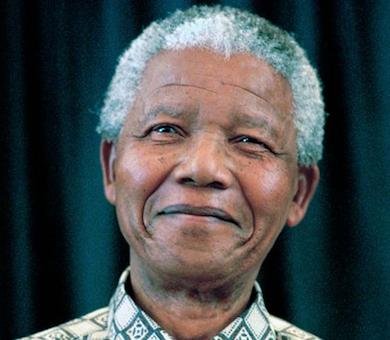

África
Presentamos una web con las localizaciones de diferentes partes del mundo
donde aparecen personas célebres referentes en la búsqueda de la paz.
Puedes pinchar en las diferentes zonas del mapa para encontrar la información.
| Nelson Mandela | ||
|---|---|---|
|  | Nelson Rolihlahla Mandela(Mvezo, Provincia Cabo Oriental; 18 de julio de 1918-Johannesburgo, Gauteng; 5 de diciembre de 2013) fue un abogado, activista contra el apartheid, político y filántropo sudafricano que presidió su país de 1994 a 1999. Fue el primer mandatario negro que encabezó el Poder Ejecutivo, y el primero en resultar elegido por sufragio universal en su país. Su gobierno se dedicó a desmontar la estructura social y política heredada del apartheid a través del combate del racismo institucionalizado, la pobreza, la desigualdad social y la promoción de la reconciliación social. Como nacionalista africano y marxista, presidió el Congreso Nacional Africano (CNA) entre 1991 y 1997, y a nivel internacional fue secretario general del Movimiento de Países No Alineados entre 1998 y 2002. |
wikipedia |
| Ellen Johnson-Sirleaf | ||
 |
Nació en Monrovia, Liberia, en el año 1938 y se convirtió en la presidenta de su país después de ganar las elecciones presidenciales del año 2005. Es considerada la primera mujer de África en presidir un país en el continente negro y “su lucha no violenta por la seguridad de las mujeres y los derechos de las mujeres a la plena participación en los trabajos de construcción de la paz” le ha valido un premio Nobel de la Paz que recibió junto a Tawakkul Karman y Leymah Gbowee. |
wikipedia |